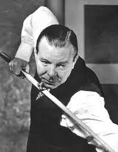
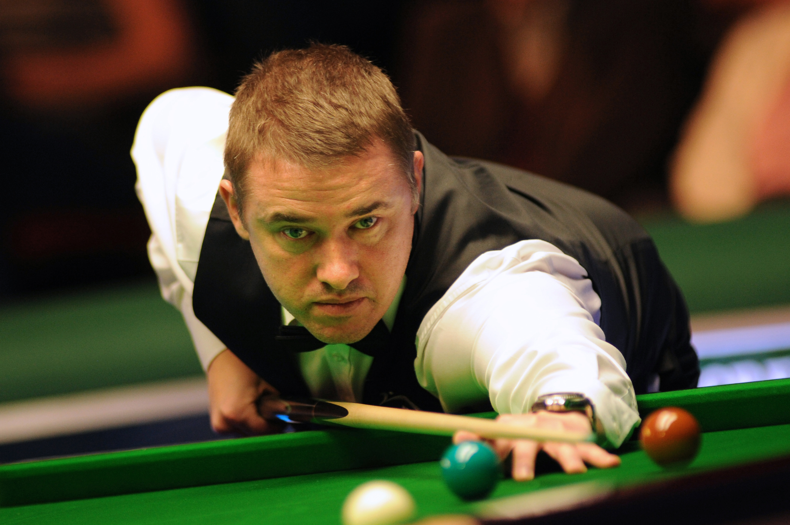
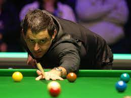

Você sabe quem é o melhor jogador de snooker de todos os tempos? Esta pergunta pode ter uma resposta um pouco complexa, pois há muitos grandes jogadores de sinuca que deixaram grandes contribuições para o esporte. Além disso, é provável que haja variações nesta resposta de acordo com a preferência pessoal de quem está respondendo. Mas o que não se pode negar é que há alguns nomes que são sempre citados nas listas. Hoje trouxemos 5 nomes de peso e contaremos um pouco de sua História
1º Joe Davis

Joe Davis, considerado o avô da sinuca, nasceu em 15 de abril de 1901 em Derbyshire, Inglaterra. Seu pai, um mineiro, largou a mineração para se tornar taberneiro no Queens Hotel, em Whittington Moor, que tinha uma grande mesa de bilhar.
Com 11 anos, Davis conquistou seu primeiro century break e se tornou campeão local de bilhar amador aos 13. Aos 18, tornou-se profissional e dominou o esporte por décadas.
Ele foi um dos primeiros jogadores a desenvolver um pensamento estratégico para vencer as partidas, dando destaque à bola 08 e ajudando a criar o destaque e importância da bola preta na atualidade. Isso fez com que o esporte se tornasse mais emocionante para quem assiste.
Davis foi o primeiro campeão mundial de snooker, em 1927. Ele venceu o torneio por 15 vezes consecutivas, até 1940. Em 1946, Davis venceu o campeonato pela última vez, antes de se aposentar. Ele é o único jogador a se aposentar invicto do Campeonato Mundial.
2º Steve Davis

Steve Davis é uma das lendas do snooker. O jogador britânico nasceu em 22 de agosto de 1957 em Plumstead, Londres e teve uma longa e vitoriosa carreira no mundo do snooker, sendo lembrado até a atualidade como um dos nomes mais importantes do esporte.
Steve conquistou 6 campeonatos mundiais, além de outros títulos importantes. Na década de 80, quando o jogo ganhou grande popularidade na Grã-Bretanha, ele foi um jogador extremamente dominante.
Steve tinha um jogo de muita precisão e consistência e também é lembrado pelas suas contribuições ao snooker, sobretudo no quesito popularidade, já que ele era um jogador muito carismático e por isso trouxe mais público para o esporte.
Mesmo após sua aposentadoria, o britânico não abandonou a sinuca e continuou a participar de grandes eventos como comentarista, além de fazer aparições em programas de TV que falam sobre o esporte.
3º Stephen Hendry

Stephen Hendry é um dos grandes jogadores de sinuca da História. Ele nasceu em 13 de janeiro de 1969 em South Queensferry, Escócia e destacou-se pelos títulos e contribuições ao mundo da sinuca.
Hendry venceu o campeonato mundial de sinuca por 7 vezes na década de 90, o que o colocou como o maior campeão da época. Um fato impressionante é que o primeiro título foi conquistado quando ele tinha apenas 21 anos.
O jogador era conhecido pelo seu jogo de alta precisão e por bater recordes, estabelecendo pontuações elevadas.
Após uma carreira de muito sucesso, em que ajudou a popularizar o jogo na Escócia, Stephen Hendry se aposentou do circuito profissional em 2012. Entretanto, ele voltou a competir em 2021.
4º Ronnie O'Sullivan

Ronnie nasceu em 5 de dezembro de 1975 em Wordsley, West Midlands, Inglaterra. Muitos o consideram o melhor jogador de snooker de todos os tempos devido aos seus 7 títulos mundiais e outras conquistas como atleta profissional de sinuca.
Ele é conhecido como The Rocket, que em tradução livre significa “O foguete”, apelido que ganhou devido à sua velocidade para pensar o jogo e executar as tacadas. Ronnie também detém alguns recordes impressionantes da modalidade, como ser o jogador mais jovem a vencer um torneio profissional, quando tinha 17 anos, e por ser o jogador a alcançar mais rapidamente 1000 quebras de 100 pontos.
O atleta também compartilhou publicamente algumas questões de saúde mental e desafios pessoais que enfrentava, o que ajudou a aumentar a conscientização sobre estes aspectos no esporte.
5º John Higgins